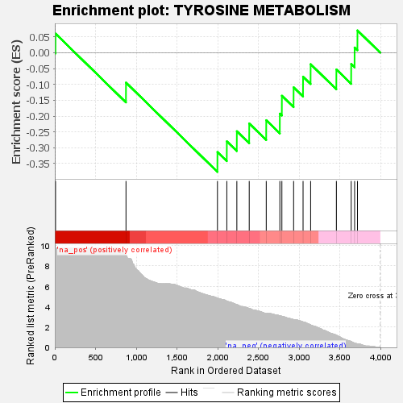
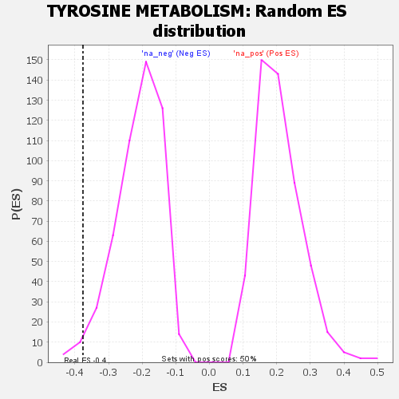

| | | Dataset | GSEA RNK clr Maaslin2 MucosalvsLuminal KO - Duodenum.rnk |
| Phenotype | NoPhenotypeAvailable |
| Upregulated in class | na_neg |
| GeneSet | TYROSINE METABOLISM |
| Enrichment Score (ES) | -0.3761304 |
| Normalized Enrichment Score (NES) | -1.783658 |
| Nominal p-value | 0.017892644 |
| FDR q-value | 0.06540067 |
| FWER p-Value | 0.632 |
Table: GSEA Results Summary

Fig 1: Enrichment plot: TYROSINE METABOLISM
Profile of the Running ES Score & Positions of GeneSet Members on the Rank Ordered List

Fig 2: TYROSINE METABOLISM: Random ES distribution
Gene set null distribution of ES for TYROSINE METABOLISM